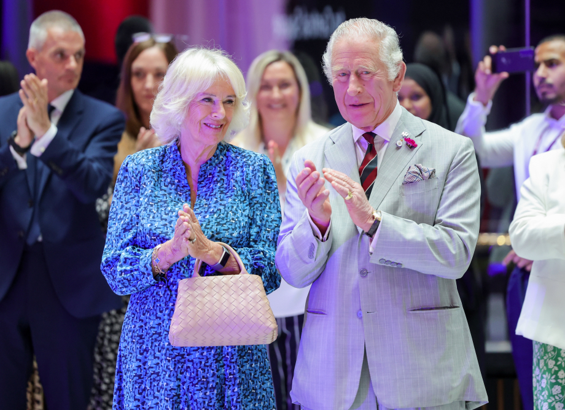

About
Her Majesty The Queen (formerly HRH The Duchess of Cornwall) supports her husband, formerly The Prince of Wales, now His Majesty The King, in carrying out his work and duties. She also undertakes public engagements on behalf of the charities that she supports.
The Queen was born Camilla Rosemary Shand on 17th July 1947 at King’s College Hospital London, the daughter of Major Bruce Middleton Hope Shand and the Hon Rosalind Maud Shand (nee Cubitt).
Major Shand and the Hon Rosalind Cubitt, the daughter of 3rd Baron Ashcombe, married on 2nd January 1946 at St Paul’s, Knightsbridge.
Her Majesty has a sister, Annabel Elliot, and a brother, Mark Shand. Mark Shand, a conservationist, died on 23rd April 2014.
The Shand family lived in East Sussex from 1951 onwards. Major Shand, MC and Bar, was Vice Lord-Lieutenant of East Sussex and Master of the South Downs Hounds for 19 years. He died aged 89 on 11th June 2006 at his home in Dorset.
Mrs Rosalind Shand was 72 when she died in 1994 as a result of osteoporosis. The Queen's grandmother had died from the same condition eight years earlier. The Queen has served as President of the Royal Osteoporosis Society since 2001, having supported the charity since 1994.
The Queen was first educated at Dumbrells School, in Sussex, and then at Queen’s Gate School in South Kensington. She also attended Mon Fertile school in Switzerland and studied at the Institut Britannique in Paris.

On 9th April 2005, The Prince of Wales and Ms. Camilla Parker-Bowles were married in a civil ceremony at the Guildhall, Windsor. They were joined by around 800 guests at a Service of Prayer and Dedication at St George’s Chapel, Windsor Castle. The Service was followed by a reception at Windsor Castle hosted by Her Majesty Queen Elizabeth II.
The Queen was previously married to Brigadier Andrew Parker Bowles and the marriage was dissolved in 1995. The couple had two children, Thomas Henry and Laura Rose, born in 1974 and 1978 respectively.

Since her marriage to The King in 2005, The Queen has become Patron or President of over 90 charities. Her Majesty’s charity work is varied but several themes prevail: health and well-being, promoting literacy, the arts, animal welfare and supporting survivors of rape and sexual assault.

On 9th April 2012, Buckingham Palace announced that Her Majesty Queen Elizabeth II had appointed The Duchess of Cornwall, as she was formerly known, to be a Dame Grand Cross of the Royal Victorian Order (GCVO).
Her Majesty has five grandchildren and five step-grandchildren.